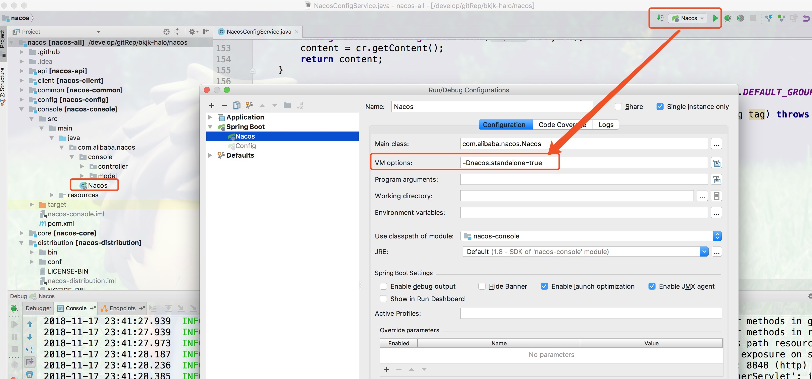

1.前言
网关中有两个重要的概念，那就是路由配置和路由规则，路由配置是指配置某请求路径路由到指定的目的地址。而路由规则是指匹配到路由配置之后，再根据路由规则进行转发处理。 Spring Cloud Gateway作为所有请求流量的入口，在实际生产环境中为了保证高可靠和高可用，尽量避免重启,需要实现Spring Cloud Gateway动态路由配置。前面章节介绍了Spring Cloud Gateway提供的两种方法去配置路由规则，但都是在Spring Cloud Gateway启动时候，就将路由配置和规则加载到内存里，无法做到不重启网关就可以动态的对应路由的配置和规则进行增加，修改和删除。本文是基于Spring Cloud Gateway的动态路由实现 基础之上编写，通过Nacos配置服务下发路由配置实现动态路由。
2. Spring Cloud Gateway简单的动态路由实现
Spring Cloud Gateway的官方文档并没有讲如何动态配置，查看 Spring Cloud Gateway的源码，发现在org.springframework.cloud.gateway.actuate.GatewayControllerEndpoint类中提供了动态配置的Rest接口，但是需要开启Gateway的端点，而且提供的功能不是很强大。通过参考和GatewayControllerEndpoint相关的代码，可以自己编码实际动态路由配置。
下面通过案例的方式去讲解怎么通Nacos实现Spring Cloud Gateway的动态路由。案例工程如spring-cloud-gateway-nacos所示。
代码地址:https://github.com/SpringCloud/spring-cloud-gateway-nacos
3. 简单动态路由的实现
3.1 新建Maven工程sc-gateway-server
配置主要的核心依赖如代码清单所示： 代码清单: spring-cloud-gateway-nacos/sc-gateway-server/pom.xml
<dependency>
<groupId>org.springframework.cloud</groupId>
<artifactId>spring-cloud-starter-gateway</artifactId>
</dependency>
<dependency>
<groupId>com.alibaba.nacos</groupId>
<artifactId>nacos-client</artifactId>
<version>0.4.0</version>
</dependency>
<dependency>
<groupId>org.springframework.boot</groupId>
<artifactId>spring-boot-starter-webflux</artifactId>
</dependency>
<dependency>
<groupId>org.springframework.boot</groupId>
<artifactId>spring-boot-starter-actuator</artifactId>
</dependency>
<dependency>
<groupId>com.alibaba</groupId>
<artifactId>fastjson</artifactId>
<version>1.2.47</version>
</dependency>
3.2 根据Spring Cloud Gateway的路由模型定义数据传输模型
分别创建GatewayRouteDefinition.java, GatewayPredicateDefinition.java, GatewayFilterDefinition.java这三个类。 (1) 创建路由定义模型
public class GatewayRouteDefinition {
//路由的Id
private String id;
//路由断言集合配置
private List<GatewayPredicateDefinition> predicates = new ArrayList<>();
//路由过滤器集合配置
private List<GatewayFilterDefinition> filters = new ArrayList<>();
//路由规则转发的目标uri
private String uri;
//路由执行的顺序
private int order = 0;
//此处省略get和set方法
}
(2)创建过滤器定义模型
public class GatewayFilterDefinition {
//Filter Name
private String name;
//对应的路由规则
private Map<String, String> args = new LinkedHashMap<>();
//此处省略Get和Set方法
}
(3)创建路由断言定义模型
public class GatewayPredicateDefinition {
//断言对应的Name
private String name;
//配置的断言规则
private Map<String, String> args = new LinkedHashMap<>();
//此处省略Get和Set方法
}
3.3 编写动态路由实现类
编写DynamicRouteServiceImpl并实现ApplicationEventPublisherAware接口，代码如下所示
@Service
public class DynamicRouteServiceImpl implements ApplicationEventPublisherAware {
@Autowired
private RouteDefinitionWriter routeDefinitionWriter;
private ApplicationEventPublisher publisher;
//增加路由
public String add(RouteDefinition definition) {
routeDefinitionWriter.save(Mono.just(definition)).subscribe();
this.publisher.publishEvent(new RefreshRoutesEvent(this));
return "success";
}
//更新路由
public String update(RouteDefinition definition) {
try {
this.routeDefinitionWriter.delete(Mono.just(definition.getId()));
} catch (Exception e) {
return "update fail,not find route routeId: "+definition.getId();
}
try {
routeDefinitionWriter.save(Mono.just(definition)).subscribe();
this.publisher.publishEvent(new RefreshRoutesEvent(this));
return "success";
} catch (Exception e) {
return "update route fail";
}
}
//删除路由
public Mono<ResponseEntity<Object>> delete(String id) {
return this.routeDefinitionWriter.delete(Mono.just(id))
.then(Mono.defer(() -> Mono.just(ResponseEntity.ok().build())))
.onErrorResume(t -> t instanceof NotFoundException, t -> Mono.just(ResponseEntity.notFound().build()));
}
@Override
public void setApplicationEventPublisher(ApplicationEventPublisher applicationEventPublisher) {
this.publisher = applicationEventPublisher;
}
}
3.4 编写Nacos监听接收下发的路由配置
3.4.1 使用Nacos监听下发的配置
监听Nacos Config Server下发配置的代码如下所示：
@Component
public class DynamicRouteServiceImplByNacos {
@Autowired
private DynamicRouteServiceImpl dynamicRouteService;
public DynamicRouteServiceImplByNacos() {
dynamicRouteByNacosListener("sc-gateway","xujin_test");
}
/**
* 监听Nacos Server下发的动态路由配置
* @param dataId
* @param group
*/
public void dynamicRouteByNacosListener (String dataId, String group){
try {
ConfigService configService=NacosFactory.createConfigService("127.0.0.1:8848");
String content = configService.getConfig(dataId, group, 5000);
System.out.println(content);
configService.addListener(dataId, group, new Listener() {
@Override
public void receiveConfigInfo(String configInfo) {
RouteDefinition definition= JSON.parseObject(configInfo,RouteDefinition.class);
dynamicRouteService.update(definition);
}
@Override
public Executor getExecutor() {
return null;
}
});
} catch (NacosException e) {
//todo 提醒:异常自行处理此处省略
}
}
}
3.4.2 两种方式创建ConfigService
使用两种方式创建com.alibaba.nacos.api.config.ConfigService
- 1.构建Properties创建
使用createConfigService(Properties properties)，代码如下所示:
Properties properties = new Properties();
properties.put("nacos.server-addr", "");
properties.put(PropertyKeyConst.SERVER_ADDR, "127.0.0.1:8848");
ConfigService configService=NacosFactory.createConfigService(properties);
注意:PropertyKeyConst是com.alibaba.nacos.api.PropertyKeyConst
- 2.只传递Nacos Config Server的地址
ConfigService configService=NacosFactory.createConfigService("127.0.0.1:8848");
4. 使用Nacos下发配置
4.1 Nacos概述
Naocs由阿里开源，Nacos 致力于帮助您发现、配置和管理微服务。Nacos 提供了一组简单易用的特性集，帮助您快速实现动态服务发现、服务配置、服务元数据及流量管理。 Nacos 帮助您更敏捷和容易地构建、交付和管理微服务平台。 Nacos 是构建以“服务”为中心的现代应用架构 (例如微服务范式、云原生范式) 的服务基础设施。github地址:https://github.com/alibaba/nacos > 更多Nacos的介绍，请访问官方网站:https://nacos.io/
4.2 在IDE中启动 Nacos
访问https://github.com/alibaba/nacos ,使用Git克隆Nacos代码，直接导入到IDEA中，如下所示设置启动参数，直接启动。

从IDE中启动Nacos是我比较推荐的方式，因为可以随时Debug Nacos任何代码，其它启动方式请参考官网。
5.测试
5.1 Nacos中下发Spring Cloud Gateway的路由配置
- 1.打开浏览器访问URL:http://localhost:8848/nacos/index.html ,Nacos的管控平台如下所示:
- 2.在Nacos的配置列表点击
+按钮，下发Spring Cloud Gateway的路由配置，如下所示:
用于测试的示例数据，如下所示:
{
"filters": [],
"id": "jd_route",
"order": 0,
"predicates": [{
"args": {
"pattern": "/jd"
},
"name": "Path"
}],
"uri": "http://www.jd.com"
}
5.2 启动sc-gateway-server
- 1.Debug启动sc-gateway-server,调试截图如下所示:
* 2.通过Spring Cloud gateway的端点，查看路由信息
- 3.通过访问http://localhost:8080/jd ,可以转发到京东商城主页
5.3 更新路由配置
- 1.通过Nacos下发配置，修改Spring Cloud Gateway的动态路由规则
- 2.查看访问Spring Cloud gateway的端点配置，可以看到动态路由修改如下:
- 3.通过访问http://localhost:8080/jd ,可以转发到百度相关页面